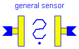
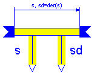

This package contains sensor elements
Release Notes:
Copyright (C) 2000, DLR.
The Modelica package is free software; it can be redistributed and/or modified under the terms of the Modelica license, see the license conditions and the accompanying disclaimer in the documentation of package Modelica in file "Modelica/package.mo".

A sensor element determines the relative kinematic quantities
between frame_a and frame_b (= variables of superclass
Interact). It does not exert forces or torques.
The following relative variables can be determined:
S_rel : Rotation matrix relating frame_a and frame_b, i.e. if
hb is vector h resoved in frame_b and ha is vector h resolved
in frame_a, hb = S_rel*ha.
r_rela: Vector from the origin of frame_a to the origin of frame_b,
resolved in frame_a.
v_rela: (Translational) velocity of frame_b with respect to frame_a,
resolved in frame_a: v_rela = der(r_rela)
w_rela: Angular velocity of frame_b with respect to frame_a,
resolved in frame_a: v_rela = vec( der(S_rel)'*S_rel )
a_rela: (Translational) acceleration of frame_b with respect to
frame_a, resolved in frame_a: a_rela = der( v_rela )
z_rela: Angular acceleration of frame_b with respect to frame_a,
resolved in frame_a: z_rela = der( w_rela )
If needed, all of the above quantities can also easily be resolved in
frame_b, according to Xrelb = S_rel*Xrela . However note, that
v_relb is NOT der(r_relb) (v_relb=S_rel*v_rela; r_relb=S_rel*r_rela).
model Sensor "General sensor element" extends MultiBody.Interfaces.Interact2; equation fa = zeros(3); fb = zeros(3); ta = zeros(3); tb = zeros(3); end Sensor;

The distance as well as the first and second derivative of the
distance between the cut-frames A and B are determined.
Terminal variables:
s : The distance between the origin of frame_a and the
origin of frame_b in [m].
sd : The first derivative of s in [m/s].
sdd : The second derivative of s in [m/s^2].
na(3): Unit vector on the line from the origin of frame_a to
the origin of frame_b, resolved in frame_a.
Parameters:
sEps: When sd and sdd are calculated, a division by zero takes
place, if the distance becomes zero. Therefore, for this
calculation the modified distance smod = max(s, sEps) is used.
| Name | Default | Description |
|---|---|---|
| sEps | 1.E-6 | prevent zero-division if rel. distance s=0 [m] |
model LineSensor "Measures kinematic data along a line"
extends MultiBody.Interfaces.Interact2;
parameter Real sEps=1.E-6
"prevent zero-division if rel. distance s=0 [m]";
SIunits.Acceleration sdd;
Real na[3];
SIunits.Position smod;
SIunits.Position s;
SIunits.Velocity sd;
Modelica.Blocks.Interfaces.OutPort outPort_s(final n=1);
Modelica.Blocks.Interfaces.OutPort outPort_sd(final n=1);
equation
fa = zeros(3);
fb = zeros(3);
ta = zeros(3);
tb = zeros(3);
s = outPort_s.signal[1];
sd = outPort_sd.signal[1];
/*calculate variables along line*/
s = sqrt(r_rela*r_rela);
smod = max([s, sEps]);
na = r_rela/smod;
sd = na*v_rela;
sdd = na*a_rela + (v_rela*v_rela - sd*sd)/smod;
end LineSensor;